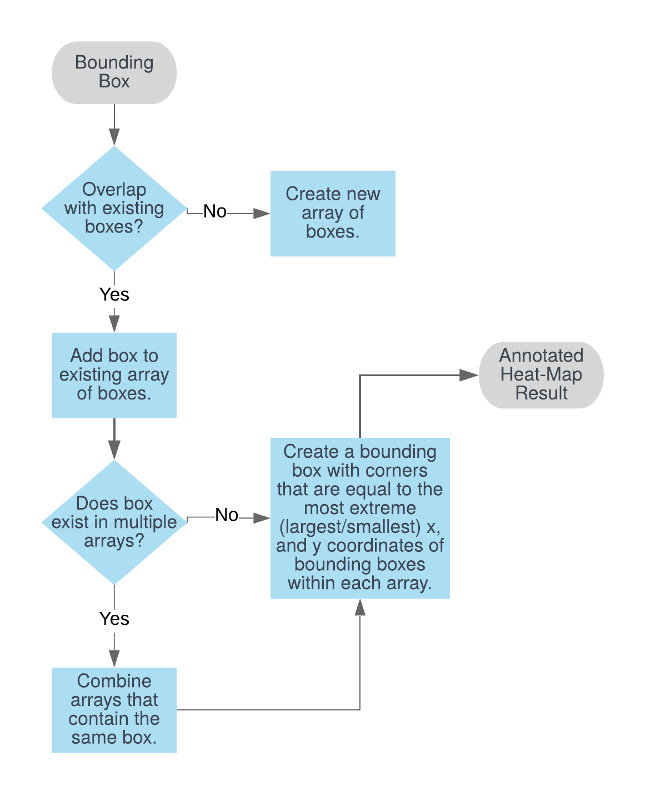
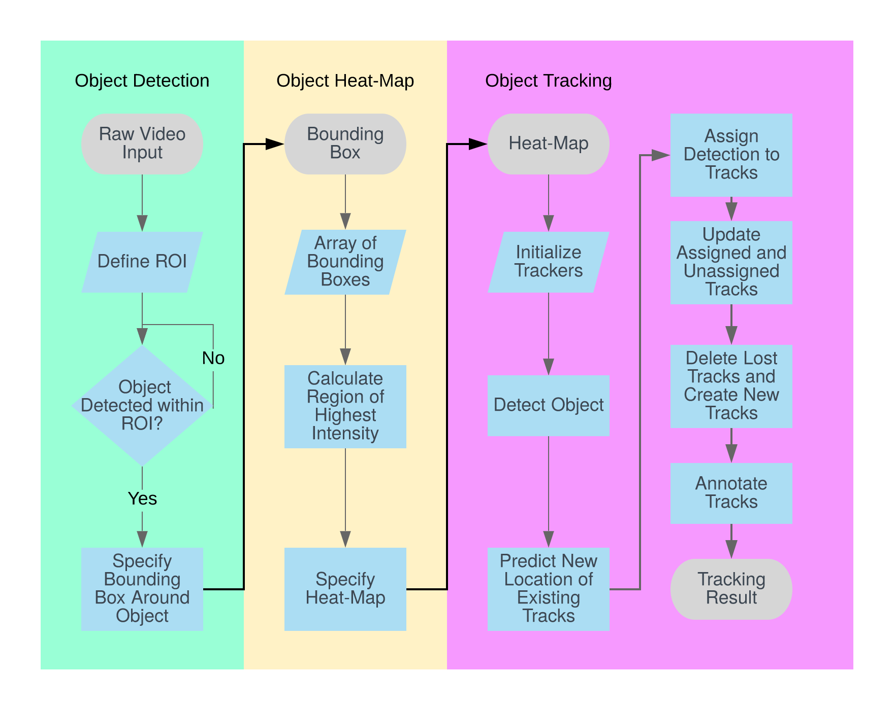

Vehicle Detection & Tracking
Objectives
My objective was to develop an improved vehicle detection algorithm with the ability to detect and track multiple vehicles within a camera frame. Previous attempts to develop a vehicle detection system were marginly successful. Specifically, using Matlab and OpenCV, we were able to develop a good vehicle detector based on HOG features. The area where this detection system fell short was in tracking and identifying multiple vehicles as they moved throughout a frame.
Strategies
There are a number of methods I used to improve the detection system:
First, I used an Aggregated Channel Feature (ACF) detection algorithm to train a new vehicle detector. Compared to the previous detection methods, ACF provides a more accurate detector that reduces false-positives, as the features are more robust to changes in colour, brightness. In terms of detection, the ACF algorithm generates bounding boxes that surround a specific vehicle in a frame. Over consecutive frames, the detector outputs multiple boxes, outlining the most likely locations of a vehicle.
To improve the accuracy of the bounding boxes, and enable the detection of multiple vechicles, I developed a heat-map algorithm (seen below) that provides a robust outline of where any number of vehicles are located within a frame.  If an object detector generates multiple bounding boxes for the same target, the algorithm takes the boxes and outputs a single combined result. For any given frame of video, bounding boxes generated by the detector are compared against each other to see if they overlap. If the bounded region of two or more boxes overlap, these boxes are grouped together in an array. Thus, each array generated by the algorithm contains every bounding box that attempts to annotate a specific object. The array of bounding boxes is then used to generate a single combined result, by determining the maximum X, maximum Y, minimum X, and minimum Y values of all the boxes within an array. These values are used to define the corners for the combined bounding boxes; given an origin at the bottom left of the video frame, the top left corner of the bounding box can be located at (Minimum X, Maximum Y), the top right corner at (Maximum X, Maximum Y), the bottom left corner at (Minimum X, Minimum Y) and the bottom right. After the bounding boxes have been generated, they are used to label and track vehicles throughout the frame. An outline of the entire system is seen below. 
Outcomes
As of present, the strategies above have resulted in a more robust and accurate vehicle detector that can track vehicles throughout a frame. While used mostly for labeling vehicles with the camera, the system works smoothly on the S32V ADAS Hardware. The images below are a depiction of the vehicle detector with the simplified heatmap.